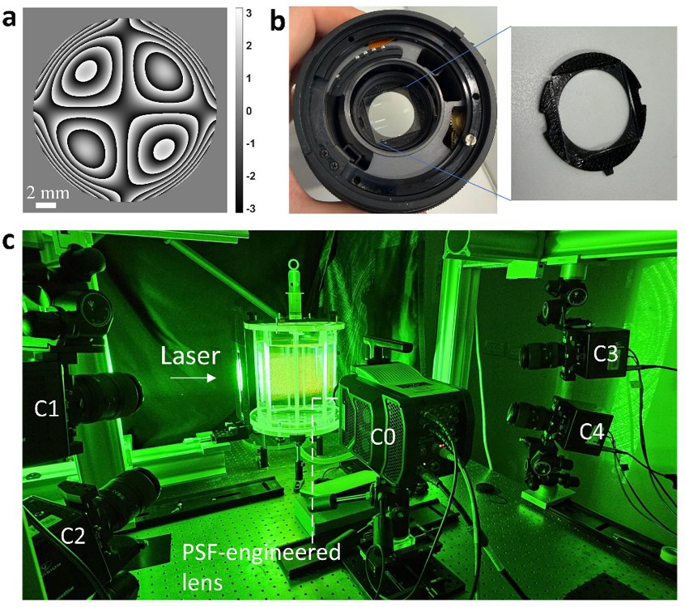
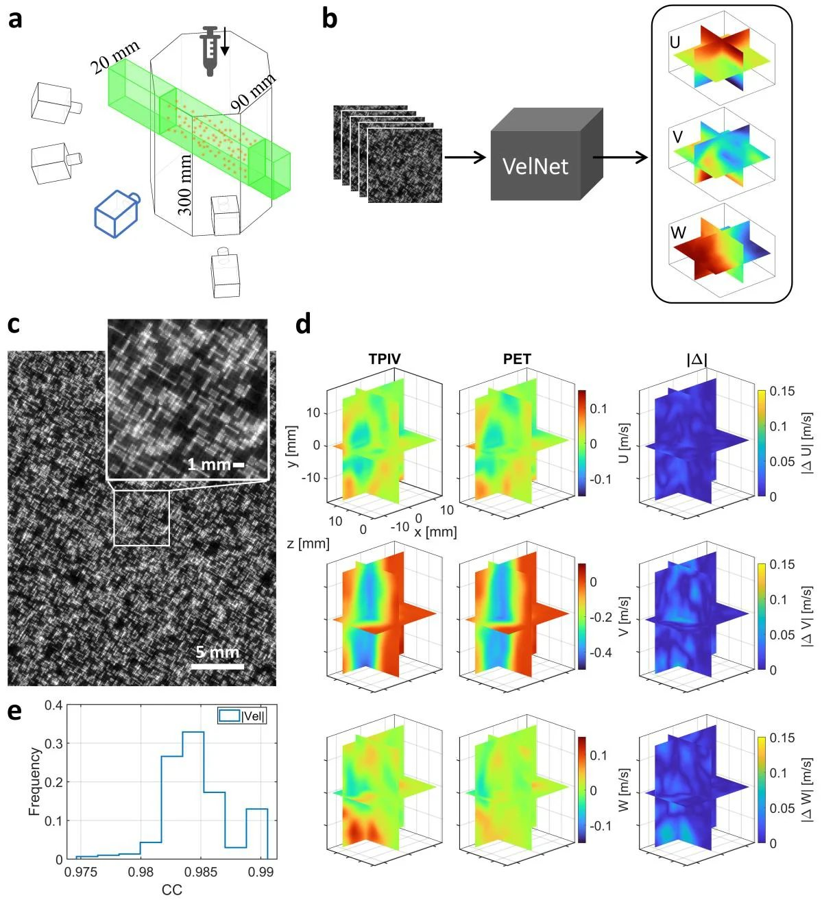

Single-camera 3D PIV
3D velocity fields from one camera, using an engineered point-spread function and deep learning.

Overview
Most 3D PIV needs several cameras, and single-camera methods break down at high seeding density because particle images overlap. Many real experiments have room for only one camera.
Experimental approach
PET-PIV adds one thin phase mask to an otherwise standard PIV setup and calibrates the imaging system in place. Deep-learning algorithms then either track individual particles or, at very high density, reconstruct the 3D velocity field directly from short sequences of 2D images. I built the five-camera system that combines tomographic and PSF-engineered imaging, which gave the tomographic PIV reference for validation.
Key result
Against tomographic PIV, PET-PIV reached correlation coefficients above 0.97 and ran an order of magnitude faster, at seeding densities that previously needed several cameras.

